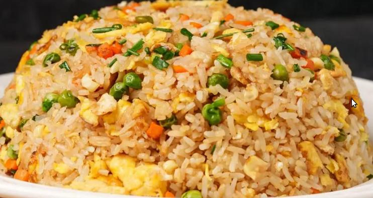

Fried Rice

Fried Rice is very tasty. Fried Rice is a perfect
way to get rid of left over rice and have a delicious
meal. You can toss other leftover veggies that you have
to make your own unique recipe.
Ingredients:
- Cold Rice
- Sesame Oil
- Garlic
- Salt and pepper to taste
- Vegetables
- Eggs
Steps:
- Break up any big clumps of rice
- Cook the vegetables in a wok in a little oil
- Remove the vegetables and cook the eggs
- Remove the eggs and add a little more oil
- Fry the rice and toss in the vegetables and eggs
- Finish with a bit os sesame oil